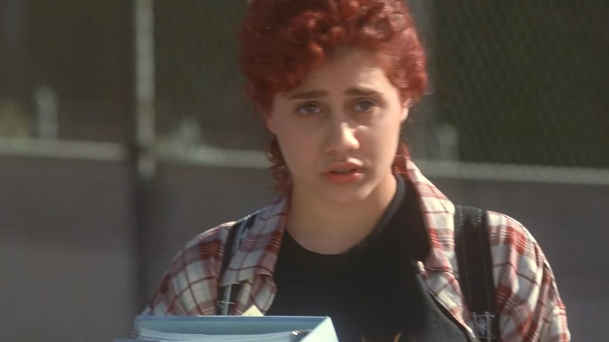
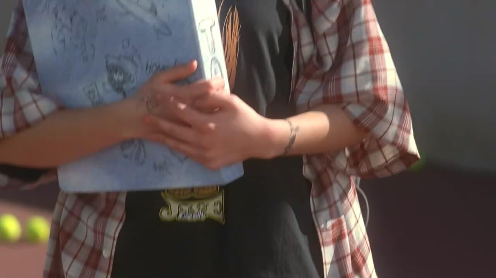
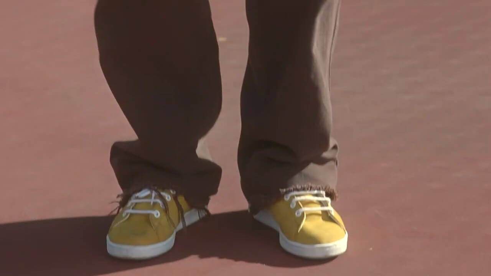
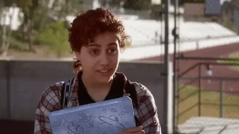
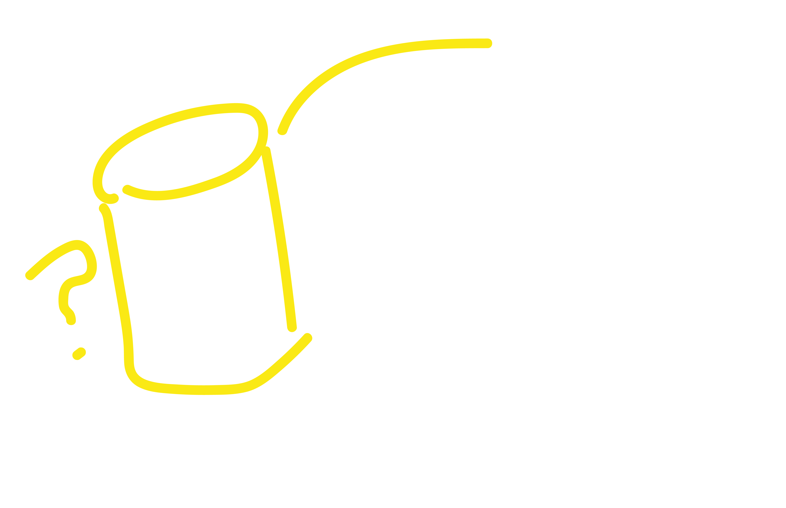
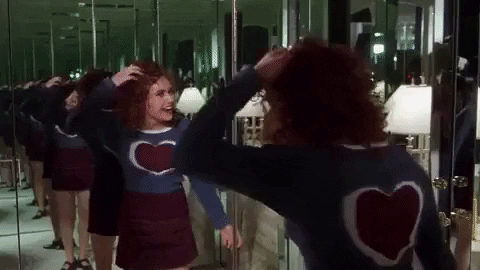

While Dionne worries that befriending such an unkempt classmate will be bad for their social standing, Cher is determined to help Tai, deeming her a lost cause in need of guidance.




We get this montage of Dionne and Cher transforming her into a more “traditionally” beautiful women, and it cuts to the reveal.
from this...
to this!
Like with Miss. Geist, Cher’s motives this time also are slightly off—she takes it upon herself to help a girl become more popular, even though it is unclear if Tai even wants that. She tries to set her up with Elton despite neither party being interested.
 Miss Geist's Makeover
Miss Geist's Makeover